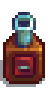
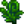
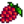

Seed Maker
| Seed Maker | |
 |
|
| Place crops inside to produce a varying amount of seeds. Doesn't work with fruit tree crops. | |
| Information | |
| Source | Crafting |
| Sell Price | Cannot be sold |
| Crafting | |
| Recipe Source | |
| Ingredients | |
The Seed Maker is a piece of Refining Equipment that produces seeds from a harvested crop or one of four foraged items: Wild Horseradish, Spice Berry, Common Mushroom, or Winter Root. It takes  20m to process seeds. [1]
20m to process seeds. [1]
A Seed Maker can be crafted after reaching Farming Level 9. One Seed Maker is the reward for completing the  Dye Bundle on the Bulletin Board. A Seed Maker may occasionally be found in a treasure room in the Skull Cavern.
Dye Bundle on the Bulletin Board. A Seed Maker may occasionally be found in a treasure room in the Skull Cavern.
Seeds per Crop
The Seed Maker can produce 1-3 seeds of the same variety as the input crop (97.51% chance, average of 2 seeds), 1-4 Mixed Seeds (1.99% chance), or 1 packet of Ancient Seeds (0.5% chance).
To avoid buying new seeds, an average of 51% of harvests would need to be sacrificed (= 1 / (0.9751 * 2)) to obtain new seeds for the next growing cycle.
The type and number of seeds produced is determined by the time of day and location of the Seed Maker.[1]
Seedless Crops
The Seed Maker does not produce seeds from:
 Blackberry
Blackberry Coconut
Coconut Coffee Bean
Coffee Bean Crocus
Crocus Crystal Fruit
Crystal Fruit
Fiddlehead Fern Fruit Tree Fruit
Fruit Tree Fruit
Salmonberry Sweet Pea
Sweet Pea Tea Leaves
Tea Leaves Wild Plum
Wild Plum- Any item listed as "Forage" in-game (other than
 Wild Horseradish,
Wild Horseradish,  Common Mushroom, and
Common Mushroom, and  Winter Root)
Winter Root)
References
History
- 1.3.27: Cactus Fruit (both foraged and farmed) can be placed in the Seed Maker to produce Cactus Seeds.
- 1.4: Can now be stacked in a player's inventory and in chests.
- 1.6: Changed game randomization, which removed Seed Maker output exploits.